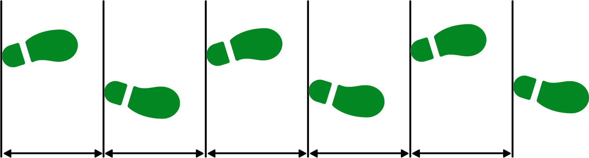
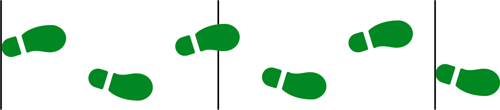
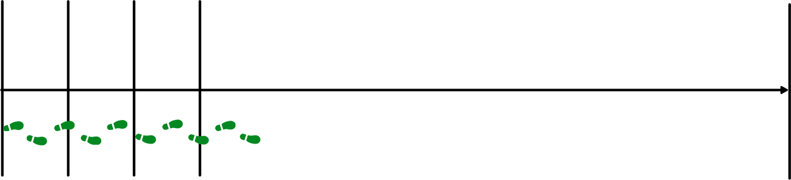
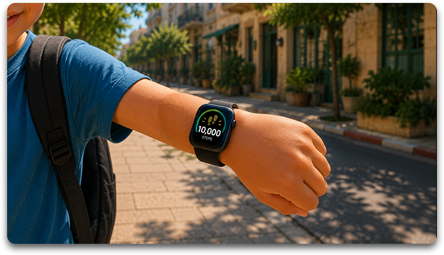
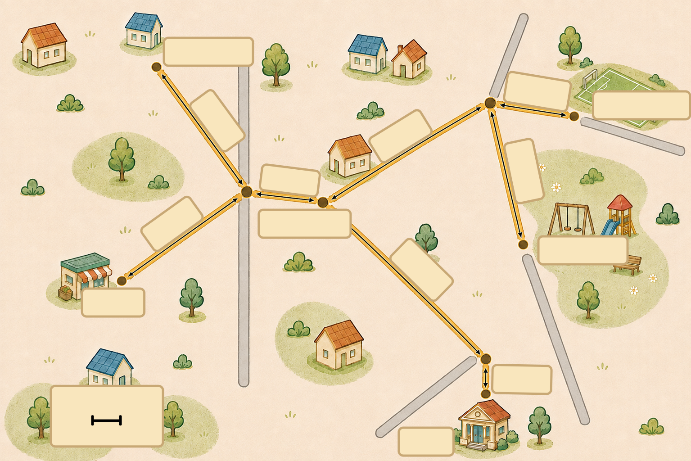
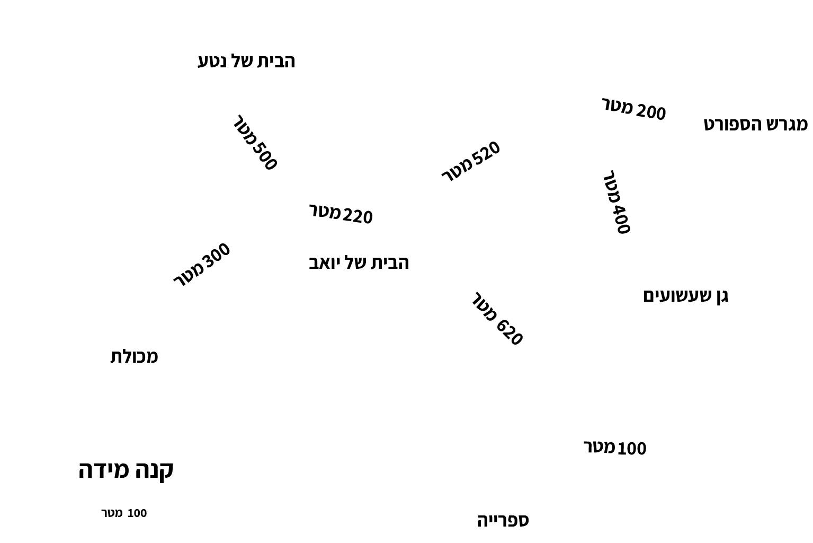
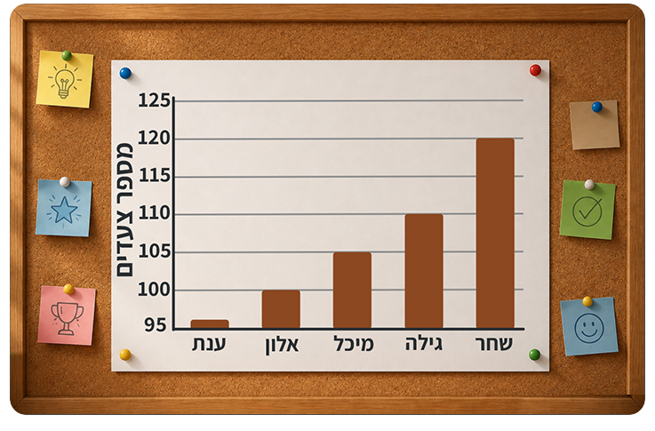
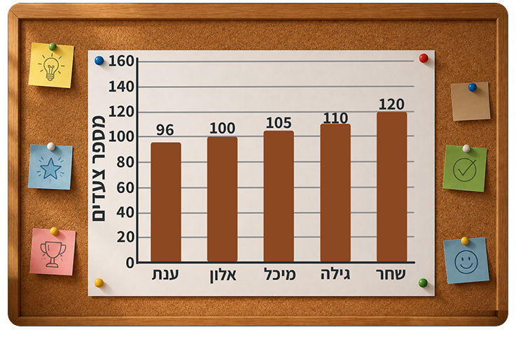

נטע, אלון, רוני ויואב הם ארבעה חברים טובים שגרים באותה שכונה. בוקר אחד, בדרך לבית הספר, הם רואים שלט חדש ומסקרן.
תראואתגר צעדים!מעניין אם מישהו יצליח לצעודעשרת אלפים צעדיםבעצם, איזה מרחק זה בכלל?זה תלוי באורך הצעד שלובואו נגלה מה אורך הצעדשל כל אחד מאיתנונקים את מועדון הצעדים!
0:000:00
אחרי שראתה את השלט, נטע רצתה לבדוק מה אורך הצעד שלה.
נטע צעדה, ורוני הוציאה סרט מדידה, מדדה בעזרתו את המרחק מעקב לעקב של נטע וקבעה: "אורך הצעד שלך הוא בדיוק 40 ס"מ!"
שאלה 1א:
כדי להתחמם לקראת האתגר, נטע צעדה 5 צעדים שווי־אורך בקו ישר.
האורך של כל צעד הוא 40 ס"מ.
מה המרחק שעברה נטע בס"מ?
הקלידו את המרחק בס"מ:

40 ס"מ
40 ס"מ
40 ס"מ
40 ס"מ
40 ס"מ

0
40
80
120
160
200
ס"מ
נטע עברה מרחק שלס"מ
כל צעד של נטע הוא 40 ס"מ. נטע צעדה 5 צעדים. 5 × 40 = 200
לכן נטע עברה 200 ס"מ.
כל הצעדים שווים באורכם.
המרחק שנטע עברה הוא סכום אורכי כל הצעדים.
שאלה 1ב:
כדי להתחמם לקראת האתגר, נטע צעדה 5 צעדים שווי אורך בקו ישר.
כל צעד הוא 40 ס"מ.
מה המרחק שעברה נטע במטר?
הקלידו את המרחק במטר:

0
1
2
מטר
נטע עברה מרחק שלמטר
כל 100 ס"מ הם מטר אחד.
לכן 200 ס"מ = 2 מטר.
במטר אחד יש 100 ס"מ.
שאלה 1ג:
נטע רוצה לצעוד 12 מטר. כמה צעדים שווי־אורך עליה לצעוד?
הקלידו את מספר הצעדים:

0
1
2
3
12
מטר

0
1
2
3
4
5
6
7
8
9
10
11
12
מטר
5 צעדים
5 צעדים
5 צעדים
5 צעדים
5 צעדים
5 צעדים
על נטע לצעודצעדים כדי לעבור 12 מטר
דרך פתרון אפשרית היא: האורך של כל צעד הוא 40 ס"מ, ולכן ב־5 צעדים נטע עוברת 200 ס"מ, שהם 2 מטר.
12 מטר הם 6 פעמים 2 מטר, לכן מכפילים את מספר הצעדים שיש ב־2 מטר ב־6.
6 × 5 = 30
נטע עוברת 2 מטר ב-5 צעדים. איך ניתן להיעזר בנתון זה כדי לגלות כמה צעדים נטע תצעד לאורך 12 מטר?
שאלה 2א:
אחרי החימום נטע המשיכה לצעוד. היא ספרה 150 צעדים שווי־אורך ועצרה. האם היא עברה יותר או פחות מ־35 מטר?
בחרו את התשובה הנכונה:
נטע עברה יותר מ־35 מטר.
מצאו קודם איזה מרחק עברה נטע במטר (אפשר להיעזר בסרגל הצעדים), ואז השוו ל־35 מטר
שאלה 2ב:
בחרו נימוקים נכונים שתומכים בכך שנטע עברה יותר מ־35 מטר:
כל 10 צעדים הם 4 מטר, וב-150 צעדים יש 15 פעמים 4 מטר, שהם 60 מטר, כלומר יותר מ-35 מטר.
הנימוק השני שגוי משום שאמנם כל 5 צעדים הם 2 מטר, אבל 150 צעדים הם 30 פעמים 5 ולא 2 x 150 .
בנימוק השלישי החישוב 150 × 40 = 6,000 ס"מ נכון, אבל ההמרה מס"מ למטר שגויה.
בנימוק הרביעי אין צורך לחשב את כל הדרך שעברה נטע, אפשר לראות שכבר אחרי 100 צעדים היא עברה 40 מטר.
בכל נימוק בדקו שני דברים: האם החישוב נכון, והאם ההמרה מס"מ למטרים נכונה.
למחרת בבוקר אלון הגיע למפגש מתנשף ומאושר, מנופף בידו.
חברים, אתמול צעדתי בדיוק עשרת אלפים צעדים,אני יודע שאורך הצעד שלי הוא שישים סנטימטרים,אתם יודעים איזה מרחק עברתי?
0:000:00

שאלה 3:
אלון צעד 10,000 צעדים ואורך כל צעד שלו הוא 60 ס"מ.
איזה מרחק עבר אלון, בק"מ?
כדי למצוא את המרחק בס"מ שעבר אלון, עלינו לכפול את מספר הצעדים שהוא עבר באורך של צעד אחד בס"מ:
10,000 × 60 = 600,000 . אלון עבר 600,000 ס"מ.
במטר אחד יש 100 ס"מ. כדי לבטא את המרחק במטר, נחלק את המרחק שעבר אלון בס"מ ב-100.
600,000 : 100 = 6,000 . אלון עבר 6,000 מטר.
בכל ק"מ יש 1,000 מטר. כדי לבטא את המרחק בק"מ, נחלק את המרחק שעבר אלון במטר ב־1,000.
6,000 : 1,000 = 6 . אלון עבר 6 ק"מ.
המירו את המרחק שאלון עבר מס"מ, למטר ואחר-כך לק"מ, שלב אחרי שלב. תזכורת: במטר אחד יש 100 ס"מ. בק"מ אחד יש 1,000 מטר.
ביום שני יצאה רוני לצעידה ארוכה. כשהסתכלה בשעון הוא הראה שעברה 4 ק"מ, ואז הסוללה התרוקנה, השעון כבה, ורוני לא הספיקה לראות כמה צעדים צעדה.
עזרו לי!אני יודעת שעברתי ארבעה קילומטריםושאורך הצעד שלי הוא 50 סנטימטריםאיך אחשב כמה צעדים צעדתי?
0:000:00
שאלה 4:
עזרו לרוני: היא עברה 4 ק"מ, ואורך הצעד שלה 50 ס"מ. כמה צעדים צעדה?
גררו את המספרים המתאימים למקומות המסומנים בסימן שאלה כדי להשלים את שלבי החישוב.
4 ק"מ
מטר
ס"מ
צעדים
בק"מ אחד יש 1,000 מטר, ולכן כדי לחשב את המרחק שרוני עברה במטר,
יש לכפול את המרחק בק"מ ב־1,000.
4 × 1,000 = 4,000 . רוני עברה 4,000 מטר.
לאחר מכן נבטא את מספר המטר בס"מ. במטר אחד יש 100 ס"מ,
ולכן כדי למצוא את המרחק שרוני עברה בס"מ יש לכפול את המרחק ב־100.
4,000 × 100 = 400,000 . רוני עברה 400,000 ס"מ.
כדי למצוא את מספר הצעדים יש לחלק את המרחק (בס"מ) באורך הצעד של רוני.
400,000 : 50 = 8,000 . רוני צעדה 8,000 צעדים.
לחצו כאן לתשובה הנכונה
כדי למצוא את מספר הצעדים, יש לייצג את המרחק שעברה רוני בס"מ.
יואב, שאוהב מאוד מפות וניווט, החליט לקחת את האתגר צעד אחד קדימה. הוא פרש את מפת השכונה על המדרכה.
אורך הצעד שלי הוא כמו של נטע40 ס"מהבוקר יצאתי מהביתוצעדתי בדיוק 1800 צעדיםעד שעצרתי.
0:000:00
שאלה 5:
אורך הצעד של יואב הוא 40 ס"מ, והוא צעד 1,800 צעדים מהבית שלו.
לאילו מקומות שונים בשכונה יואב יכול להגיע בסוף הצעידה שלו?
שימו לב: המרחקים המצוינים על המפה הם במטר.


כדי לחשב את המרחק שעבר יואב יש לכפול את מספר הצעדים באורך צעד אחד בס"מ.
1,800 × 40 = 72,000 . המרחק שעבר יואב בס"מ הוא 72,000.
כעת יש לבטא את המרחק במטר. 72,000 : 100 = 720 .
יואב יכול להגיע למקומות שהמרחק ביניהם הוא 720 מטר.
המרחקים על המפה מצוינים במטר, ואורך הצעד של יואב בס"מ.
כדי לצבור עוד צעדים, מועדון הצעדים ארגן תחרות במגרש הספורט: חמישה ילדים צעדו מסלול של 60 מטר, וכל אחד מנה את צעדיו.
שאלה 6:
ביום ראשון תלו על לוח הכיתה את תוצאות התחרות. חמישה ילדים צעדו מרחק של 60 מטר, ולכל אחד מהם אורך צעד קבוע. הדיאגרמה מציגה את מספר הצעדים של כל אחד. למי מהילדים הצעד הקצר ביותר?

מספר הצעדים של שחר היה הגדול ביותר ולכן אורך הצעד שלו הוא הקצר ביותר.
כולם עברו את אותו מרחק.
האם מי שצעדיו קצרים יותר צריך יותר או פחות צעדים כדי לעבור את אותו מרחק?
שאלה 7:
רוני הביטה בדיאגרמה וקראה בהתלהבות: "תראו! כמה דברים מעניינים אפשר לראות בדיאגרמה".
בחרו את הטענות הנכונות שאפשר להסיק מהדיאגרמה.
הטענות הנכונות הן השנייה והרביעית:
הציר האנכי מתחיל מ־95 ולא מ־0, ולכן אי אפשר להסיק מגובה העמודות פי כמה גדול מספר הצעדים. אפשר להשוות רק את המספרים עצמם.
שתי הטענות השגויות מסתמכות על גובה העמודות בלבד: מיכל לא צעדה פי 2 יותר צעדים מאלון, וכמות הצעדים של גילה לא הייתה פי 3 יותר מהצעדים של אלון.
קראו את מספר הצעדים הרשומים בציר, ושימו לב מאיזה מספר הציר מתחיל.
שאלה 8:
אחרי שהבינה את הטעות, רוני סרטטה את הדיאגרמה מחדש עם ציר אנכי שמתחיל ב־0.
שחר צעד 60 מטר ב־120 צעדים.
בעזרת איזה תרגיל אפשר לחשב את אורך הצעד של שחר בס"מ?

כדי למצוא את אורך הצעד של שחר, ניתן לבטא את המרחק 60 מטר בס"מ על ידי כפל ב־100.
60 x 100 = 6,000 , ולאחר מכן לחלק במספר הצעדים 120.
6,000 : 120 = 50 .
אורך כל צעד של שחר הוא 50 ס"מ.
האורך של כל צעד הוא המרחק הכולל שעבר שחר לחלק למספר הצעדים.
בחגיגת השכונה הגדולה חבורת מועדון הצעדים חגגה את סיום האתגר.
התלמידים גילו שמאחורי כל צעד מסתתרת מתמטיקה, ועכשיו הם יודעים לחשב מרחקים על־פי מספר הצעדים ולהמיר יחידות אורך!